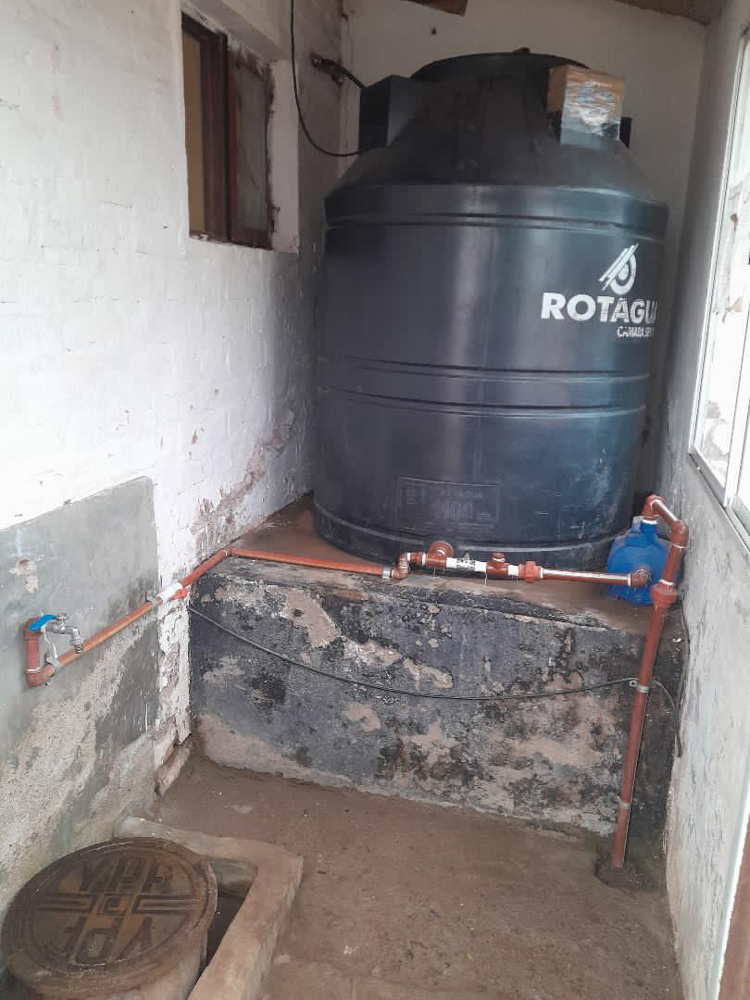
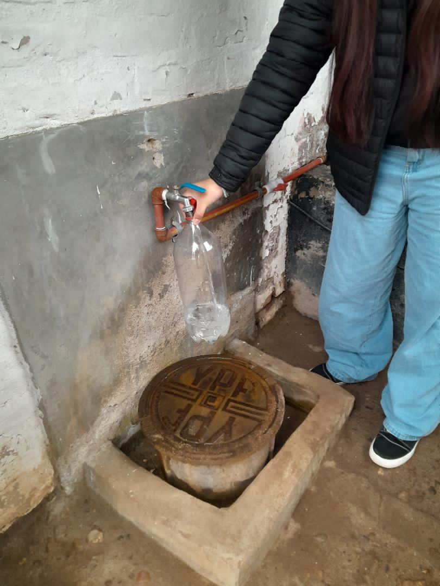
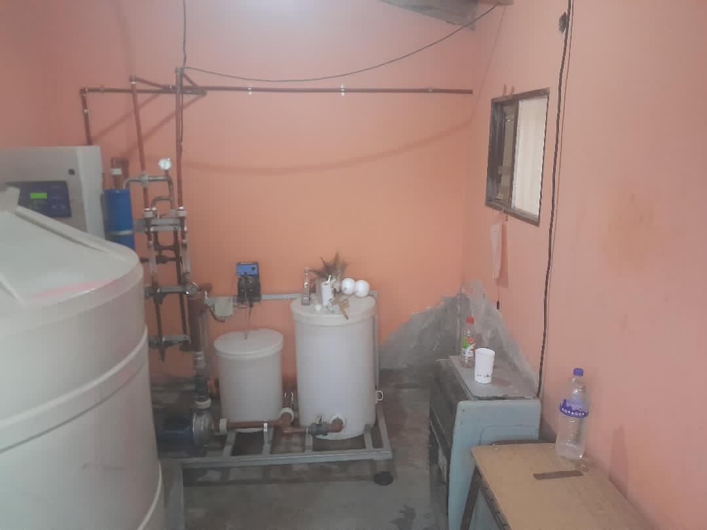

En el paraje Aguada Guzmán, el agua que utiliza la población se obtiene de una perforación subterránea. Para que pueda ser utilizada de manera segura, pasa por un proceso de potabilización mediante una planta de ósmosis inversa.
Este sistema permite tratar el agua y reducir la cantidad de sales y otras sustancias presentes en ella, logrando un agua adecuada para el consumo.

¿De dónde proviene el agua?
El agua proviene del subsuelo, a través de una perforación y cisterna. Luego es conducida hasta la planta de tratamiento, donde comienza el proceso de potabilización.
El agua subterránea es muy importante para las comunidades rurales: en muchos lugares no existen grandes redes de agua provenientes de ríos o lagos, por eso en varios pueblos hay una perforación subterránea de donde sale agua constantemente.

¿Qué es la ósmosis inversa?
La ósmosis inversa es un método de tratamiento del agua que utiliza una membrana especial para separar las sales, los minerales y otras sustancias. De esta manera, el agua pasa por diferentes etapas de tratamiento antes de ser almacenada y distribuida para su utilización. Con esta planta cuenta el paraje en la actualidad.

Cuidamos el agua que es utilizada por el pueblo
De esta casilla de abastecimiento público es donde saca agua la comunidad para consumir y almacenar en sus casas, ya que el agua que sale en los hogares de la gente es salada y no se puede consumir de forma natural.
La gente de esta comunidad coopera entre todos para mantener este espacio público limpio y seguro, para que no nos falte el agua.

En la fotografía se observa parte de la instalación utilizada para el tratamiento del agua y purificación, para que el agua ya se pueda consumir: la planta de ósmosis inversa.